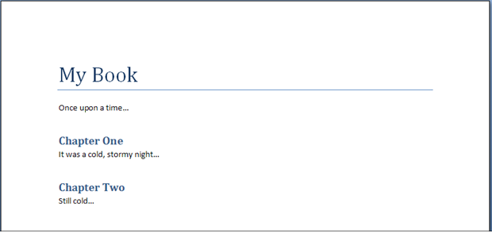
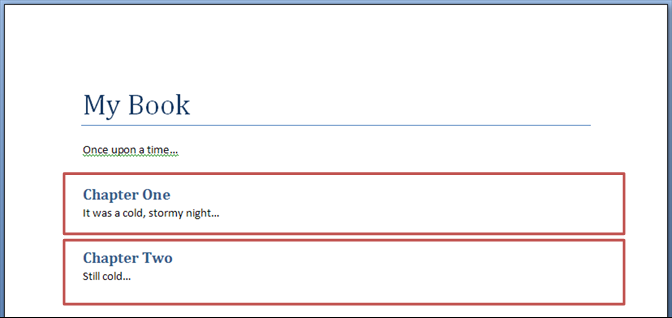

[Table of Contents] [docx version]
WordprocessingML Reference Material - Table of Contents
Within a WordprocessingML document, it is sometimes necessary to break a large document into two or more separate WordprocessingML document files, allowing each of these files to be distributed, edited, and handled independently.
[Example: A book might consist of five chapters, each edited by a separate author. The editor for the book would therefore desire to create six WordprocessingML documents - one for each author to work on their chapter, and a main document which collates the content of the five chapters appropriately. end example]
When a WordprocessingML document is comprised of other WordprocessingML documents in this way, the resulting documents are called a master document and its subdocuments.
• A subdocument is a WordprocessingML document - there is no specific information in a document which classifies it as such, other than that it is incorporated into another document.
• A master document is a document which incorporates one or more subdocuments (as well as optional WordprocessingML content) to create a larger document
[Example: Consider a WordprocessingML document which is being used to write a book:

To allow this document to be written by multiple authors, each chapter in the book is placed in a separate file (the sections highlighted in red below):

The result is three WordprocessingML documents:
• A master document (containing the title of the book, the first paragraph, and references to the subdocuments for each chapter)
• Two subdocuments (one for each chapter)
end example]